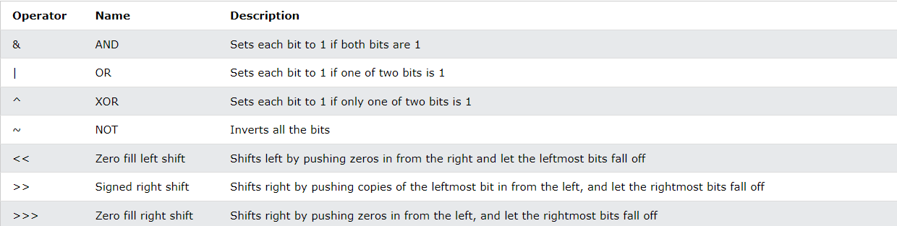

Home Kelompok 5
Ini adalah beberapa hasil rangkuman dari Kelompok 5.
Rangkuman 1
1.1 Apa itu JavaScript(JS)?
JavaScript adalah bahasa pemrograman yang digunakan untuk membuat halaman web interaktif. JavaScript memungkinkan Anda untuk menambah fitur dinamis seperti animasi, form interaktif, dan banyak lagi pada halaman web.
1.2 Fitur utama JS
1. Interaktif: JavaScript memungkinkan halaman web untuk berinteraksi dengan pengguna (misalnya, menampilkan pesan atau melakukan aksi saat pengguna mengklik tombol).
2. Dijalankan di Browser: JavaScript dijalankan langsung di browser pengguna, sehingga tidak memerlukan server khusus.
3. Mudah Dipelajari: JavaScript relatif mudah dipelajari dan digunakan.
1.3 Bagaimana JS Bekerja
JavaScript ditempatkan di dalam halaman HTML dan dijalankan oleh browser. Biasanya ditulis dalam tag (<)script(>) dalam file HTML, atau dalam file terpisah dengan ekstensi .js
1.4 Kapan Menggunakan JS?
1. Validasi Formulir: Memeriksa input pengguna sebelum data dikirim ke server.
2. Manipulasi DOM: Mengubah elemen HTML setelah halaman dimuat.
3. Animasi dan Efek: Menambahkan efek visual seperti sliding atau fading.
2.1 Dimana harus mulai belajar JS?
1. Mulai dengan Dasar-Dasar JavaScript: Jika Anda baru memulai dengan JavaScript, Anda harus mempelajari dasar-dasar terlebih dahulu. W3Schools menyediakan tutorial yang mudah diikuti mulai dari konsep-konsep dasar seperti variabel, fungsi, dan operator.
2. Pelajari HTML dan CSS: JavaScript digunakan untuk membuat halaman web lebih dinamis, jadi Anda harus memahami HTML (struktur halaman web) dan CSS (desain halaman web).
3. Fokus pada Penggunaan JavaScript di Browser: JavaScript terutama digunakan untuk membuat halaman web interaktif. Anda akan belajar bagaimana menggunakan JavaScript untuk manipulasi DOM (Document Object Model), mengubah elemen halaman secara dinamis.
4. Bergabung dengan Komunitas: Mencari dukungan dan berbagi pengalaman di forum atau grup komunitas dapat sangat membantu.
5. Praktikkan dan Bangun Proyek Sendiri: Cara terbaik untuk belajar adalah dengan praktik langsung. Cobalah untuk membangun aplikasi web kecil untuk memahami bagaimana JavaScript bekerja di dunia nyata.
3.1 Cara Menampilkan Output di JavaScript
1. Alert
Menampilkan kotak dialog dengan pesan. Contoh: alert("Halo, Dunia!");
2. Document.write
Menulis output langsung ke halaman HTML. Contoh: document.write("Selamat datang!");
3. Console.log
Menampilkan output di konsol browser (untuk debugging). Contoh: console.log("Ini pesan di konsol");
4.1 Apa itu Statements dalam JavaScript?
Statements adalah perintah atau instruksi yang memberi tahu komputer apa yang harus dilakukan. Di JavaScript, setiap baris kode yang dieksekusi adalah sebuah statement.
4.2 Jenis-jenis Statements di JavaScript
1. Expression Statement
Statement yang menghasilkan nilai (ekspresi). Contoh: let x = 5 + 3;
2. Declaration Statement
Statement yang mendeklarasikan variabel. Contoh: let x;
3. Control Flow Statements
Mengontrol alur eksekusi program, seperti if, else, for, while, dll. Contoh: if (x > 5) {console.log("x lebih besar dari 5");}
4. Function Statement
Mendeklarasikan fungsi untuk digunakan di tempat lain dalam kode. Contoh: function myFunction() {console.log("Hello World");}
5. Return Statement
Menghentikan eksekusi fungsi dan mengembalikan nilai. Contoh: function add(a, b) {return a + b;}
Profile Saya
Nama: John Doe
Email: johndoe@example.com
Tanggal Lahir: 1 Januari 1990
Alamat: Jalan Contoh No. 123, Jakarta
Bio: Pengembang web dengan pengalaman lebih dari 5 tahun dalam membangun aplikasi berbasis web.
Pengaturan
Halaman pengaturan akan memungkinkan Anda mengubah preferensi aplikasi, termasuk tema, notifikasi, dan lainnya.
Rangkuman 4
1.1 Apa Itu loop for in
loop for...in digunakan untuk melakukan iterasi (perulangan) pada properti yang dapat dihitung (enumerable properties) dari suatu objek. Ini memungkinkan Anda untuk mengakses nama properti (key) dari objek tersebut.
1.2 sintaks
contoh sintaks
for (key in object) {
// Kode yang dijalankan pada setiap iterasi
}
Penjelasan
-key: Merupakan variabel yang akan berisi nama properti (key) dari objek yang sedang diiterasi.
-object: Objek yang propertinya akan diiterasi (biasanya objek biasa, bisa juga array meskipun lebih disarankan menggunakan for...of untuk array).
Contoh lain
const orang = {nama: "John", umur: 30, kota: "New York"}; for (let key in orang) { console.log(key + ": " + orang[key]); }
Penjelasan
Objek orang memiliki tiga properti: nama, umur, dan kota.
Dengan menggunakan for...in, kita dapat mengakses setiap properti dalam objek tersebut secara berurutan.
Pada setiap iterasi, variabel key akan berisi nama properti seperti nama, umur, atau kota, dan kita bisa mengakses nilai properti tersebut menggunakan orang[key].
Output
nama: John umur: 30 kota: New York
Hal-Hal yang Perlu Diperhatikan:
1.Urutan Iterasi: Dalam objek, urutan properti yang dihasilkan oleh for...in tidak dijamin berurutan. Ini bisa berbeda-beda tergantung pada implementasi JavaScript, meskipun pada beberapa kasus, urutan bisa sesuai dengan urutan penulisan properti dalam objek.
2.Penggunaan pada Array: Meskipun bisa digunakan untuk array, for...in tidak dianjurkan untuk array karena bisa menghasilkan hasil yang tidak diinginkan (seperti properti tambahan pada array). Sebaiknya gunakan for...of untuk array karena lebih sesuai untuk iterasi elemen array.
2.1 JavaScript loop for of
Apa Itu Loop For OF
Loop for...of digunakan untuk melakukan iterasi nilai dari objek yang dapat diiterasi (iterables) seperti array, string, Map, Set, dan objek iterable lainnya. Berbeda dengan for...in yang mengakses nama properti objek, for...of mengakses nilai elemen dalam objek iterable.
2.2 keuntungan Menggunakan Loop For Of
1.Mudah digunakan: Loop ini lebih sederhana dan jelas ketika ingin mengakses nilai elemen dalam array atau objek iterable lainnya.
2.Tidak membutuhkan indeks: Tidak perlu khawatir tentang indeks atau properti saat menggunakan for...of, cukup akses nilai elemen langsung.
3.Berguna untuk berbagai jenis iterable: Bisa digunakan pada array, string, Map, Set, dan tipe iterable lainnya.
2.3 Perbedaan Dengan Loop For In
-for...in digunakan untuk mengiterasi kunci atau properti dari objek, sedangkan for...of digunakan untuk mengiterasi nilai elemen dalam iterable (seperti array atau string).
Kesimpulan
- Gunakan for...of ketika Anda ingin mengiterasi elemen nilai dari array atau objek iterable.
- idak cocok untuk objek biasa (yang memiliki properti non-numerik), karena for...of hanya berfungsi pada objek iterable seperti array, string, Map, Set, dll.
3.1 Loop While
Apa Itu Loop While
Loop while adalah jenis perulangan di JavaScript yang akan terus menjalankan blok kode selama suatu kondisi bernilai true. Begitu kondisi tersebut menjadi false, perulangan akan berhenti.
3.2 Sintaks umum
while (kondisi) {
/ Kode yang dijalankan selama kondisi bernilai true
}
Kondisi:
Sebuah ekspresi yang dievaluasi sebelum setiap iterasi. Jika kondisi ini bernilai true, kode di dalam blok akan dieksekusi. Jika kondisi bernilai false, loop berhenti.
Kode Yang Dijalankan:
Blok kode yang akan dieksekusi selama kondisi bernilai true.
3.3 Proses Kerja While
1. Evaluasi Kondisi:
Sebelum setiap iterasi, kondisi dievaluasi. Jika kondisi bernilai true, maka blok kode di dalam while akan dijalankan.
2. Eksekusi Kode
kode dalam blok akan dijalankan
3. Pembaruan Kondisi
Biasanya, kondisi harus diperbarui dalam blok kode untuk menghindari infinite loop
4. Perulangan atau penghentian
Setelah kode dieksekusi, kondisi akan dievaluasi kembali. Jika masih true, perulangan akan dilanjutkan; jika sudah false, loop berhenti.
3.3 Contoh Penggunaan While
let i = 0;
while (i < 5) {
console.log(i);
i++; // Menambahkan nilai i setiap iterasi
}
Output
0
1
2
3
4
Penjelasan
- Loop dimulai dengan i = 0.
- Setiap iterasi, i dicetak, kemudian i ditambah 1 (i++).
- Kondisi i < 5 terus diperiksa, dan selama kondisi ini bernilai true, perulangan akan terus berlangsung.
3.4 Kasus Penggunaan Yang Tepat
Loop yang bergantung pada kondisi tertentu:
Misalnya, kita ingin melakukan perulangan sampai pengguna memberikan input yang valid.
Ketika jumlah iterasi tidak diketahui sebelumnya:
Loop while berguna ketika kita tidak tahu berapa kali perulangan akan dilakukan, dan kita hanya tahu kondisi yang harus dipenuhi untuk berhenti.
3.5 Kesimpulan
Fungsi utama while:
Loop while digunakan untuk melakukan perulangan selama suatu kondisi bernilai true.
Pentingnya pembaruan kondisi:
Agar loop berhenti pada waktu yang tepat, kondisi harus diubah di dalam blok kode.
Hati-hati dengan infinite loop:
Pastikan kondisi yang digunakan akan berakhir pada akhirnya.
4.1 JavaScript Break
Apa Si JavaScript Break itu?
break dalam JavaScript adalah sebuah perintah yang digunakan untuk menghentikan eksekusi dari sebuah perulangan (loop) atau statement switch lebih awal, sebelum kondisi yang seharusnya selesai sepenuhnya. Dengan kata lain, break memungkinkan Anda untuk keluar dari perulangan atau statement secara langsung begitu kondisi tertentu terpenuhi.
4.2 Penjelasan Tentang Break Dalam JavaScript
-Fungsi break: Digunakan untuk menghentikan perulangan (loop) atau pengkondisian (switch) secara langsung.
-Kapan digunakan: break digunakan ketika Anda ingin menghentikan eksekusi sebuah loop (seperti for, while, atau do...while) atau statement switch lebih cepat dari yang dijadwalkan.
4.3 Contoh Penggunaan Dalam Loop
Ketika sebuah kondisi tertentu terpenuhi, perintah break dapat menghentikan loop, bahkan jika loop tersebut belum selesai sepenuhnya.
Contoh kode menggunakan break dalam while loop:
let i = 0;
while (i < 10) {
break; // berhenti ketika i == 5
}
console.log(i);
i++;
}
Pada contoh di atas, loop akan berhenti ketika nilai i mencapai 5, meskipun kondisi loop (i < 10) masih belum tercapai.
4.4 Kesimpulan:
Perintah break memungkinkan kita untuk menghentikan loop atau switch lebih awal berdasarkan kondisi tertentu yang telah ditentukan.
5.1 JavaScript Iterables
Iterable dalam JavaScript adalah objek yang dapat diulang (iterasi), seperti array, string, map, dan set. Objek iterable memiliki metode khusus yang memungkinkan kita untuk mengakses elemen-elemennya satu per satu, menggunakan loop atau struktur iterasi lainnya.
5.2 Apasi Js Iterables?
Iterable adalah objek yang mendukung iterasi, yaitu objek yang bisa dilewati satu per satu elemennya. Objek-objek ini memiliki metode khusus bernama Symbol.iterator, yang mengembalikan objek iterator. Iterator ini memiliki metode next(), yang mengembalikan objek dengan dua properti: value (nilai elemen) dan done (status apakah iterasi sudah selesai).
5.3 Objek Iterables
1.Array: Array adalah iterable karena kita bisa menggunakan loop untuk mengakses setiap elemennya.
2.String: String juga iterable, sehingga bisa diiterasi karakter per karakter.
3.Map: Map adalah iterable yang menyimpan pasangan key-value.
4.Set: Set adalah koleksi yang menyimpan nilai unik, dan juga iterable.
5.4 Metode Yang Mendukung Iterable
- for...of loop: Digunakan untuk iterasi objek iterable.
- spread operator (...): Menyebarkan elemen-elemen iterable dalam array atau objek lain.
- Destructuring: Digunakan untuk mendestructure nilai dari iterable, seperti dalam array atau map.
6.1 JavaScript Sets
set dalam JavaScript adalah tipe data yang menyimpan koleksi nilai yang unik dan tidak terurut. Set memungkinkan kita untuk menyimpan elemen-elemen tanpa duplikasi dan menyediakan beberapa metode untuk bekerja dengan koleksi tersebut.
6.2 Ciri-Ciri Set
1. Nilai Unik
Set hanya menyimpan nilai unik. Jika Anda mencoba menambahkan nilai yang sudah ada, nilai tersebut tidak akan ditambahkan.
2. Tidak Terurut
Elemen dalam Set tidak dijamin memiliki urutan tertentu. Artinya, urutan elemen tidak selalu konsisten.
3. Dapat Menyimpan Tipe Data Apa Saja
Set bisa menyimpan nilai dengan tipe data apa saja, termasuk objek, fungsi, dan tipe primitif lainnya
6.2 Membuat Set:
Untuk membuat Set, Anda menggunakan konstruktor Set().
let mySet = new Set();
Anda juga bisa membuat Set dari array atau iterable lain:
let numbers = new Set([1, 2, 3, 4]);
Metode dan Properti Set:
1. add(value): Menambahkan elemen ke Set. Jika elemen sudah ada, tidak ada yang berubah.
2. delete(value): Menghapus elemen dari Set.
3. has(value): Mengecek apakah elemen ada di Set.
4. clear(): Menghapus semua elemen dalam Set.
5. size: Mengembalikan jumlah elemen dalam Set.
6.3 Contoh Penggunaan
let uniqueNumbers = new Set([1, 2, 3, 4, 4, 5, 6, 6]);
console.log(uniqueNumbers); // Set { 1, 2, 3, 4, 5, 6 }
uniqueNumbers.add(7);
console.log(uniqueNumbers); // Set { 1, 2, 3, 4, 5, 6, 7 }
uniqueNumbers.delete(3);
console.log(uniqueNumbers); // Set { 1, 2, 4, 5, 6, 7 }
console.log(uniqueNumbers.size); // 6
7.1 JavaScript Set Menthods
Apasih JavaScript Set Menthods?
JS Set Methods merujuk pada metode-metode yang tersedia untuk berinteraksi dengan objek Set dalam JavaScript. Set adalah struktur data yang menyimpan koleksi nilai yang unik dan tidak terurut. Set memiliki beberapa metode yang memungkinkan Anda untuk menambah, menghapus, memeriksa, dan mengelola elemen-elemen di dalamnya.
7.2 Metode-metode Set dalam JavaScript:
1. add(value)
-Menambahkan elemen ke dalam Set. Jika elemen sudah ada, tidak ada perubahan karena Set hanya menyimpan nilai unik.
2. delete(value)
-Menghapus elemen tertentu dari Set. Mengembalikan true jika elemen ditemukan dan dihapus, dan false jika elemen tidak ada.
4.clear()
-Menghapus semua elemen dalam Set. Setelah dipanggil, Set akan menjadi kosong.
size
Mengembalikan jumlah elemen dalam Set.
forEach(callback)
Menjalankan fungsi callback untuk setiap elemen dalam Set. Fungsi ini menerima tiga parameter: nilai elemen, nilai elemen itu (value), dan objek Set itu sendiri.
let mySet = new Set([1, 2, 3]);
mySet.forEach(value => {
console.log(value); // Output: 1, 2, 3
});
8.1 JavaScript Maps
Map dalam JavaScript adalah objek koleksi yang menyimpan pasangan key-value (kunci-nilai). Setiap elemen dalam Map terdiri dari dua bagian: kunci (key) dan nilai (value). Map memiliki beberapa keuntungan dibandingkan dengan objek biasa, seperti menjaga urutan elemen dan memungkinkan penggunaan tipe data selain string sebagai kunci.
8.2 Fitur Utama Map
1. Pasangan Key-Value: Map menyimpan nilai dalam pasangan kunci-nilai. Setiap kunci harus unik, tetapi nilai bisa berulang.
2. Urutan Tersimpan: Map mempertahankan urutan elemen berdasarkan urutan penambahannya.
3. Kunci yang Fleksibel: Kunci dalam Map bisa berupa tipe data apapun, termasuk objek, fungsi, dan nilai primitif (berbeda dengan objek biasa yang hanya bisa menggunakan string atau simbol sebagai kunci).
Map Menghitung Ukuran: Map memiliki properti size yang memberi tahu jumlah pasangan key-value.
8.3 Membuat Map
Untuk membuat Map, Anda bisa menggunakan konstruktor Map().
Contoh:
let myMap = new Map();
Atau, Anda bisa membuat Map dari array pasangan key-value:
let myMap = new Map([["name", "Alice"], ["age", 25]]);
8.4 Metode dan Properti Map:
1. set(key, value)
Menambahkan pasangan key-value ke Map. Jika kunci sudah ada, nilainya akan diperbarui.
2. get(key)
Mengambil nilai berdasarkan kunci tertentu. Mengembalikan undefined jika kunci tidak ada.
3. has(key)
Mengecek apakah Map memiliki pasangan dengan kunci tertentu. Mengembalikan true jika kunci ada, dan false jika tidak.
4. delete(key)
Menghapus pasangan key-value berdasarkan kunci. Mengembalikan true jika berhasil menghapus, dan false jika kunci tidak ada.
5. clear()
Menghapus semua pasangan key-value dalam Map.
6. size
Mengembalikan jumlah pasangan key-value yang ada dalam Map.
8.5. Iterasi pada Map:
Map dapat diiterasi dengan menggunakan berbagai metode iterasi, seperti for...of atau forEach:
for...of Loop:
Menggunakan for...of untuk iterasi melalui pasangan key-value dalam Map.
forEach(callback):
Fungsi forEach menerima callback yang dijalankan untuk setiap pasangan key-value.
myMap.forEach((value, key) => {
console.log(key, value);
});
9.1 JavaScript Map Menthods
1. set(key, value)
Fungsi: Menambahkan pasangan key-value ke dalam Map. Jika kunci yang diberikan sudah ada di Map, maka nilai (value) yang ada akan diperbarui dengan nilai baru yang diberikan.
2. get(key)
Fungsi: Mengambil nilai yang terkait dengan kunci tertentu. Jika kunci tidak ditemukan dalam Map, maka akan mengembalikan undefined.
3. has(key)
4. delete(key)
Fungsi: Menghapus pasangan key-value berdasarkan kunci yang diberikan. Mengembalikan true jika berhasil menghapus elemen, dan false jika kunci tidak ditemukan
5. clear
Fungsi: Menghapus semua pasangan key-value dalam Map. Map akan menjadi kosong setelah metode ini dipanggil.
6. size
Fungsi: Mengembalikan jumlah pasangan key-value yang ada dalam Map
7. forEach(callback)
Fungsi: Menjalankan fungsi callback untuk setiap pasangan key-value dalam Map. Fungsi ini menerima 3 parameter: nilai (value), kunci (key), dan objek Map itu sendiri.
8. keys()
Fungsi: Mengembalikan iterator yang berisi semua kunci (keys) dalam Map.
9. values()
Fungsi: Mengembalikan iterator yang berisi semua nilai (values) dalam Map.
10. entries()
Fungsi: Mengembalikan iterator yang berisi semua pasangan key-value dalam Map.
10.1 JavaScript Typeof
typeof adalah operator dalam JavaScript yang digunakan untuk memeriksa tipe data dari sebuah nilai atau variabel. Operator ini mengembalikan tipe data dari operand yang diberikan dalam bentuk string.
sintaks
typeof operand
10.2 Hasil Yang Di Berikan Oleh Typeof
1. "undefined"
Diberikan jika operand belum didefinisikan atau variabel tidak memiliki nilai.
Contoh
let a;
console.log(typeof a); // "undefined"
2. "boolean"
Diberikan jika operand adalah nilai boolean (true atau false).
contoh
let isActive = true;
console.log(typeof isActive); // "boolean"
3. "number"
Diberikan jika operand adalah nilai boolean (true atau false).
4. "string"
Diberikan jika operand adalah string.
5. "object"
Diberikan jika operand adalah objek, array, atau null.
6. Diberikan jika operand adalah objek, array, atau null.
Diberikan jika operand adalah fungsi.
7."symbol"
Diberikan jika operand adalah simbol (tipe data baru yang diperkenalkan di ECMAScript 6)
8. "bigint"
Diberikan jika operand adalah BigInt, tipe data untuk angka yang lebih besar dari Number.
10.3 Contoh Penggunaan
console.log(typeof 42); // "number"
console.log(typeof "Hello"); // "string"
console.log(typeof true); // "boolean"
console.log(typeof undefined); // "undefined"
console.log(typeof { name: "John" }); // "object"
console.log(typeof [1, 2, 3]); // "object" (arrays dianggap sebagai objek)
console.log(typeof function() {}); // "function"
11.1 JavaScript Type Conversion
JavaScript Type Conversion adalah proses mengubah tipe data dari satu bentuk ke bentuk lainnya. JavaScript menyediakan dua jenis konversi tipe: implicit (konversi otomatis) dan explicit (konversi manual).
11.2 Implicit Type Conversion (Konversi Tipe Implicit)
Konversi tipe otomatis terjadi ketika JavaScript secara otomatis mengubah tipe data selama operasi. Ini sering terjadi ketika tipe data yang berbeda digunakan dalam ekspresi yang sama.
Contoh Implicit Conversion:
Menggunakan operator + dengan angka dan string:
let result = 5 + "5"; // "55" (angka 5 dikonversi menjadi string)
Menggunakan operator perbandingan
console.log(5 == "5"); // true (string "5" dikonversi menjadi angka)
11.3 Konversi Tipe Secara Otomatis:
javaScript secara otomatis mengonversi tipe data dalam beberapa kasus, seperti:
Menggunakan operator + pada angka dan string: angka dikonversi menjadi string.
Menggunakan operator perbandingan (==): membandingkan dua nilai meskipun tipe datanya berbeda, JavaScript akan mencoba untuk mengonversinya agar bisa dibandingkan.
12.1 JavaScript Destructuring
Konversi tipe eksplisit dilakukan secara manual oleh developer menggunakan fungsi atau metode JavaScript untuk mengubah tipe data.
12.2 Array Destructuring
Array destructuring memungkinkan kita untuk mengekstrak elemen-elemen dalam array dan menyimpannya dalam variabel terpisah.
Sintaks:
let [var1, var2] = array;
Contoh:
let arr = [1, 2, 3];
let [a, b] = arr;
console.log(a); // 1
console.log(b); // 2
Explicit Type Conversion (Konversi Tipe Explicit)
Konversi tipe eksplisit dilakukan secara manual oleh developer menggunakan fungsi atau metode JavaScript untuk mengubah tipe data.
Metode untuk Konversi Tipe:
String()
Number()
Boolean()
13.1 JavaScript Bitwise Operations
Contoh:

13.2 Jenis-Jenis Bitwise Operators di JavaScript:
AND (&)
Fungsi: Menghasilkan 1 hanya jika kedua bit yang dibandingkan adalah 1.
Contoh
console.log(5 & 3); // 1 (5: 0101, 3: 0011, hasil: 0001)
OR (|)
Fungsi: Menghasilkan 1 jika salah satu bit yang dibandingkan adalah 1.
XOR (^)
Fungsi: Menghasilkan 1 jika hanya satu bit yang berbeda antara kedua angka.
NOT (~)
Fungsi: Mengubah semua bit menjadi kebalikan (1 menjadi 0, dan 0 menjadi 1). Ini adalah operasi unari (hanya membutuhkan satu operand).
13.3 Penting untuk Diketahui:
Bitwise operators bekerja langsung pada representasi biner dari angka.
Operasi bitwise hanya berlaku pada angka bertipe number (dalam bentuk bilangan bulat 32-bit).
Meskipun bitwise operators sering digunakan dalam operasi yang berhubungan dengan bit-level dan algoritma tertentu, mereka biasanya tidak sering digunakan dalam pengembangan sehari-hari untuk aplikasi umum.
14.1 JavaScript Regular Expressions
Regular Expressions (RegEx) dalam JavaScript adalah pola pencarian yang digunakan untuk mencocokkan, mencari, dan memanipulasi teks. RegEx memungkinkan pengembang untuk melakukan pencarian yang lebih kompleks dalam string menggunakan pola yang didefinisikan.
1. Membuat Regular Expression:
2. Metode yang Menggunakan Regular Expressions:
3. Karakter Khusus dalam RegEx
4. Modifikator (Flags):
5. Grouping dan Capture:
15.1 JavaScript Operator Precedence
Operator Precedence di JavaScript menentukan urutan di mana operator dieksekusi dalam sebuah ekspresi. Operator dengan prioritas lebih tinggi akan dieksekusi terlebih dahulu.
Contoh Urutan Eksekusi:
1. Tanda Kurung (): Menentukan urutan eksekusi.
(2 + 3) * 4 // 20
2. Exponentiation **: Eksekusi lebih dulu.
2 ** 3 // 8
3. Multiplication *, Division /, Modulus %: Dijalankan sebelum penjumlahan dan pengurangan.
3 + 2 * 2 // 7
4. Addition +, Subtraction -: Eksekusi setelah perkalian.
5 - 3 + 2 // 4
5. Assignment =: Menugaskan nilai.
let x = 5 + 3; // x = 8
Pengaturan
Halaman pengaturan akan memungkinkan Anda mengubah preferensi aplikasi, termasuk tema, notifikasi, dan lainnya.